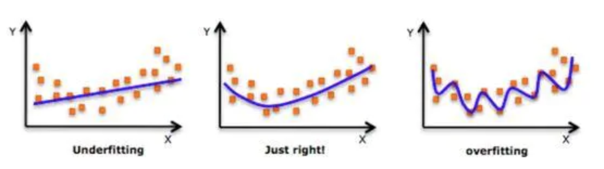
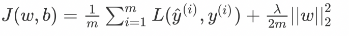
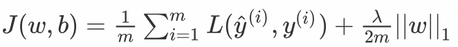
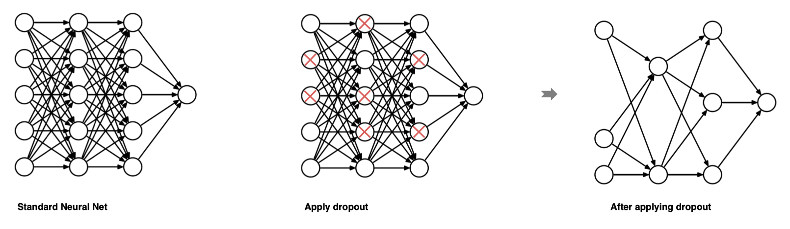
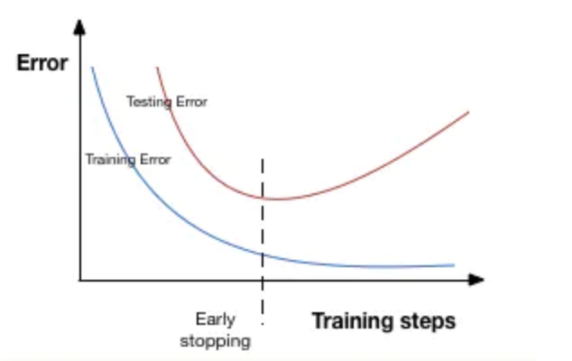
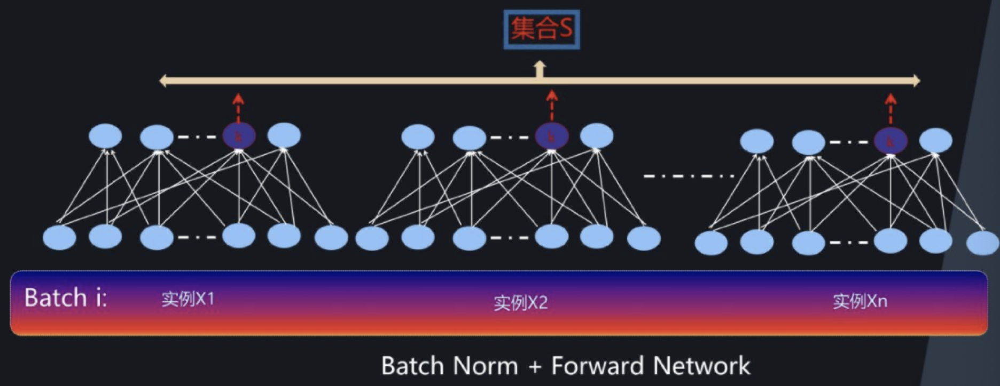
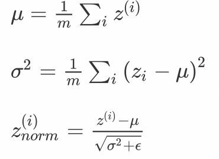
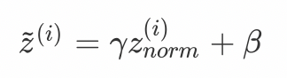
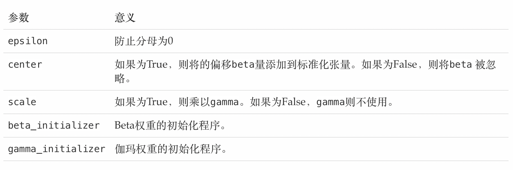

2.4 深度学习正则化
学习目标
- 知道L2正则化与L1正则化的方法
- 知道随机失活droupout的应用
- 知道提前停止的使用方法
- 知道BN层的使用方法

在设计机器学习算法时不仅要求在训练集上误差小，而且希望在新样本上的泛化能力强。许多机器学习算法都采用相关的策略来减小测试误差，这些策略被统称为正则化。因为神经网络的强大的表示能力经常遇到过拟合，所以需要使用不同形式的正则化策略。
正则化通过对算法的修改来减少泛化误差，目前在深度学习中使用较多的策略有参数范数惩罚，提前终止，DropOut等，接下来我们对其进行详细的介绍。
1. L1与L2正则化(回顾)
L1和L2是最常见的正则化方法。它们在损失函数（cost function）中增加一个正则项，由于添加了这个正则化项，权重矩阵的值减小，因为它假定具有更小权重矩阵的神经网络导致更简单的模型。 因此，它也会在一定程度上减少过拟合。然而，这个正则化项在L1和L2中是不同的。
- L2正则化

这里的λ是正则化参数，它是一个需要优化的超参数。L2正则化又称为权重衰减，因为其导致权重趋向于0（但不全是0）
- L1正则化

这里，我们惩罚权重矩阵的绝对值。其中，λ 为正则化参数，是超参数，不同于L2，权重值可能被减少到0.因此，L1对于压缩模型很有用。其它情况下，一般优先选择L2正则化。
在tf.keras中实现使用的方法是：
- L1正则化
tf.keras.regularizers.L1(l1=0.01)
- L2正则化
tf.keras.regularizers.L2(l2=0.01)
- L1L2正则化
tf.keras.regularizers.L1L2(
l1=0.0, l2=0.0
)
我们直接在某一层的layers中指明正则化类型和超参数即可：
# 导入相应的工具包
import tensorflow as tf
from tensorflow.keras import regularizers
# 创建模型
model = tf.keras.models.Sequential()
# L2正则化，lambda为0.01
model.add(tf.keras.layers.Dense(16, kernel_regularizer=regularizers.l2(0.001),
activation='relu', input_shape=(10,)))
# L1正则化，lambda为0.01
model.add(tf.keras.layers.Dense(16, kernel_regularizer=regularizers.l1(0.001),
activation='relu'))
# L1L2正则化，lambda1为0.01,lambda2为0.01
model.add(tf.keras.layers.Dense(16, kernel_regularizer=regularizers.L1L2(0.001, 0.01),
activation='relu'))
2.Dropout正则化
dropout是在深度学习领域最常用的正则化技术。Dropout的原理很简单：假设我们的神经网络结构如下所示，在每个迭代过程中，随机选择某些节点，并且删除前向和后向连接。

因此，每个迭代过程都会有不同的节点组合，从而导致不同的输出，这可以看成机器学习中的集成方法（ensemble technique）。集成模型一般优于单一模型，因为它们可以捕获更多的随机性。相似地，dropout使得神经网络模型优于正常的模型。
在tf.keras中实现使用的方法是dropout：
tf.keras.layers.Dropout(rate)
参数：
rate： 每一个神经元被丢弃的概率
例子：
# 导入相应的库
import numpy as np
import tensorflow as tf
# 定义dropout层,每一个神经元有0.2的概率被失活，未被失活的输入将按1 /（1-rate）放大
layer = tf.keras.layers.Dropout(0.2,input_shape=(2,))
# 定义五个批次的数据
data = np.arange(1,11).reshape(5, 2).astype(np.float32)
# 原始数据进行打印
print(data)
# 进行随机失活：在training模式中，返回应用dropout后的输出；或者在非training模式下，正常返回输出（没有dropout）
outputs = layer(data,training=True)
# 打印失活后的结果
print(outputs)
结果为：
[[ 1. 2.]
[ 3. 4.]
[ 5. 6.]
[ 7. 8.]
[ 9. 10.]]
tf.Tensor(
[[ 1.25 2.5 ]
[ 0. 5. ]
[ 6.25 7.5 ]
[ 8.75 10. ]
[ 0. 12.5 ]], shape=(5, 2), dtype=float32)
3.提前停止
提前停止（early stopping）是将一部分训练集作为验证集（validation set）。 当验证集的性能越来越差时或者性能不再提升，则立即停止对该模型的训练。 这被称为提前停止。

在上图中，在虚线处停止模型的训练，此时模型开始在训练数据上过拟合。
在tf.keras中，我们可以使用callbacks函数实现早期停止:
tf.keras.callbacks.EarlyStopping(
monitor='val_loss', patience=5
)
上面，monitor参数表示监测量，这里val_loss表示验证集损失。而patience参数则表示模型在训练的过程中，在验证集上的性能，在连续5个epochs后没有提升时，会停止训练。为了更好地理解，让我们再看看上面的图片。 在虚线之后，每个epoch都会导致更高的验证集误差。 因此，虚线后patience个epoch，模型将停止训练，因为没有进一步的改善。
# 导入相应的工具包
import tensorflow as tf
import numpy as np
# 当连续3个epoch loss不下降则停止训练
callback = tf.keras.callbacks.EarlyStopping(monitor='loss', patience=3)
# 定义只有一层的神经网络
model = tf.keras.models.Sequential([tf.keras.layers.Dense(10)])
# 设置损失函数和梯度下降算法
model.compile(tf.keras.optimizers.SGD(), loss='mse')
# 模型训练
history = model.fit(np.arange(100).reshape(5, 20), np.array([0,1,2,1,2]),
epochs=10, batch_size=1, callbacks=[callback],
verbose=1)
# 打印运行的epoch
len(history.history['loss'])
输出：
Epoch 1/10
5/5 [==============================] - 0s 600us/step - loss: 145774557280600064.0000
Epoch 2/10
5/5 [==============================] - 0s 522us/step - loss: 10077891596456623723194184833695744.0000
Epoch 3/10
5/5 [==============================] - 0s 1ms/step - loss: inf
Epoch 4/10
5/5 [==============================] - 0s 1ms/step - loss: inf
# 只运行了4次
4
4. 批标准化
批标准化(BN层, Batch Normalization)是2015年提出的一种方法，在进行深度网络训练时，大多会采取这种算法，与全连接层一样，BN层也是属于网络中的一层。
BN层是针对单个神经元进行，利用网络训练时一个 mini-batch 的数据来计算该神经元 的均值和方差，归一化后并重构，因而称为 Batch Normalization。在每一层输入之前，将数据进行BN，然后再送入后续网络中进行学习：

首先我们对某一批次的数据的神经元的输出进行标准化，

然后再使用变换重构，引入了可学习参数 ，如果各隐藏层的输入均值在靠近0的区域，即处于激活函数的线性区域，不利于训练非线性神经网络，从而得到效果较差的模型。因此，需要用 和 对标准化后的结果做进一步处理：

这就是BN层最后的结果。整体流程如下图所示：

在tf.keras中实现使用：
# 直接将其放入构建神经网络的结构中即可
tf.keras.layers.BatchNormalization(
epsilon=0.001, center=True, scale=True,
beta_initializer='zeros', gamma_initializer='ones',
)

3.2.8 总结
- 知道L2正则化与L1正则化的方法
在损失函数（cost function）中增加一个正则项，由于添加了这个正则化项，权重矩阵的值减小，因为它假定具有更小权重矩阵的神经网络导致更简单的模型
- 知道随机失活droupout的应用
在每个迭代过程中，随机选择某些节点，并且删除前向和后向连接
- 知道提前停止的使用方法
当看到验证集的性能越来越差时或者性能不再提升，立即停止对该模型的训练
- 知道BN层的使用方法
利用网络训练时一个 mini-batch 的数据来计算该神经元 的均值和方差，归一化后并重构，因而称为 Batch Normalization